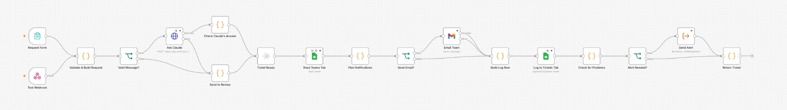
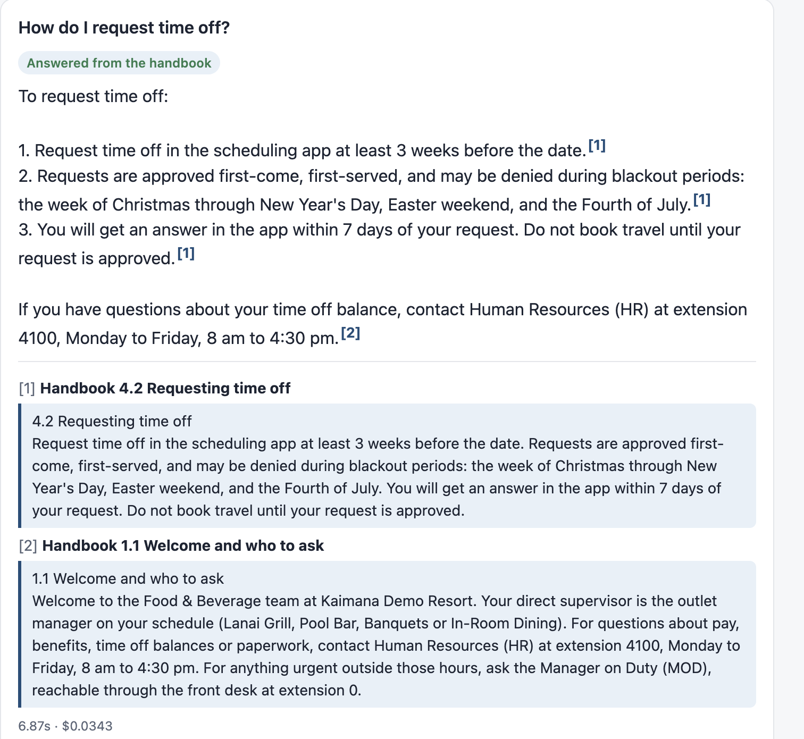
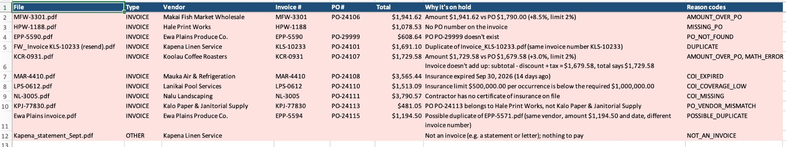
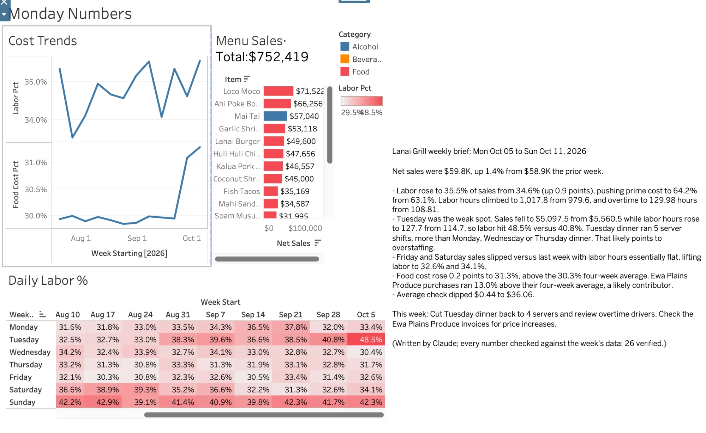
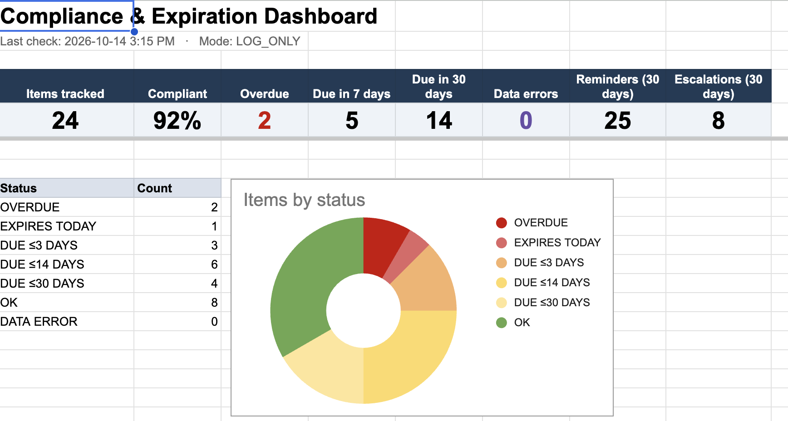
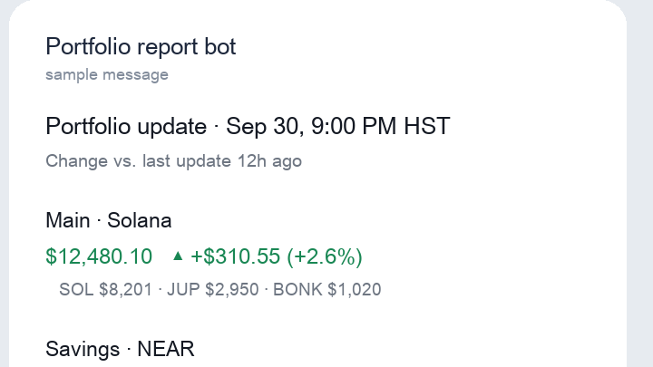

I turn restaurant and hotel headaches into working AI automations
Ten years in restaurants and hotels, from host to shift lead · Finance degree, December 2026 · Oahu, Hawaii
I build the tools I wished I had on shift: an AI dispatcher for guest requests, an invoice checker, a Monday KPI report that won't publish bad numbers, a handbook assistant that refuses to guess, a compliance tracker, and a portfolio tracker I use every day. Each one is tested against failures I planted on purpose, and the results, including what broke, are written up.
Projects

Shift Desk
AI dispatcher for hotel guest requests
Kept all 13 emergencies urgent on 60 requests it had never seen

Ask the Handbook
Onboarding assistant that only answers from the handbook
39 of 40 right, and every out-of-handbook question sent to HR

Paper Chaser
Invoice and vendor-insurance checker
Read 180 of 180 fields correctly, including scanned pages

Monday Numbers
Restaurant KPI dashboard with a fact-checked AI brief
Refuses to publish when a day is missing; every number in the AI brief verified

Compliance Tracker
Certification, permit and vendor-insurance expiry tracker
Flags lapses 30 days early, and you can try it in your own Google account

Portfolio Tracker
Portfolio tracking notification system
Runs twice a day on its own, for free, and alerts only on real price spikes
How I work
Every project starts with something I saw go wrong on shift: lost requests, paperwork, the Monday report, new-hire questions.
AI does the language work. Plain code does the math, the checks and the approvals, so they're exact and testable.
I plant the failures (duplicates, scans, bad math, prompt injection, missing data) and score the results against an answer key written first.
Each project has a findings log: what failed, why, the fix, and how it was verified. Including my own mistakes.
Accuracy, cost per request and time saved, with estimates labeled as estimates.
About
I've spent about ten years in restaurants and hotels in almost every role: host, busser, food runner, server, bartender, shift lead, and some kitchen work. From every side of the floor, the same problems show up: requests written on notepads, invoices typed in by hand, reports rebuilt every Monday, and new hires asking the same questions every week.
I'm finishing a degree in finance (December 2026) and moving into AI automation and operations roles where I can build fixes for those problems instead of working around them. I build with AI tools: n8n, the Claude API, and Claude Code as a coding partner for the Python, SQL, Apps Script and Tableau pieces. I decide what each project should do, design the tests, find what breaks, and write it up.
Contact
Open to AI automation, operations and business analyst roles on Oahu or remote.